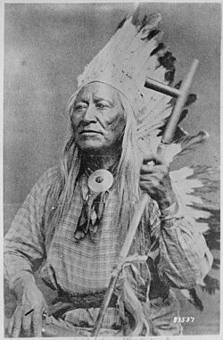
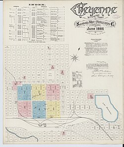
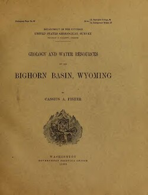

Six real sources about Washakie County — an article, a photograph, a map, a book, a dataset and a film — each carded the way every GYR-O site cards its sources.
The shape never changes, so a reader learns it once. What changes is part 4, the preview: prose for an article, a small picture for a photograph or a map, the first page and a page count for a book, row and column counts for a dataset, a still and a running time for a film. Every picture here was fetched once and stored with this page, so it works offline and tells no other server who is reading. Each one is public domain or openly licensed, as its provenance line says.
How to read a card
Every card below reads the same way, top to bottom. Parts 4 and 5 are the ones a bare footnote never gives you.
Number and kind — what sort of thing it is
Title — what it is called
Provenance — who made it, when, under what license
Preview — what you would find if you went there
Why it is cited — what it is doing on this page
The link — last, and only last
The cards
Each is followed by a one-line note saying which kind of preview it demonstrates.
1Reference · an encyclopedia article
Washakie County, Wyoming
Wikipedia · edited continuously · text under CC BY-SA 4.0
The county’s general article. It records that the county was authorized on 21 February 1911 as Hanover County, carved from Big Horn County, and organized in 1913; that it is named for Chief Washakie of the Shoshone; that Worland is the county seat; that it covers 2,243 square miles; and that the 2020 census counted 7,685 people. Sections follow on history, geography, demographics, politics and the Wyoming Boys’ School.
Why it is cited: as the plain starting point, and as the ordinary case: a page of prose is previewed in prose.
Washakie (Shoots-the-Buffalo-Running), a Shoshoni chief, half-length, seated, holding pipe
U.S. National Archives, NARA ID 530875 · photographer not recorded · public domain

A seated half-length portrait of the chief the county is named for, holding a pipe, in a studio photograph held by the National Archives. The original scan is 1,971 by 3,000 pixels.
Why it is cited: because a name on a map is easier to care about with a face beside it, and because a photograph is the clearest case for a picture in the preview.
Sanborn Fire Insurance Map from Cheyenne, Laramie County, Wyoming, 1886, Plate 1
Sanborn Map Company, June 1886 · Library of Congress scan, via Wikimedia Commons · public domain

The first plate of the 1886 Sanborn atlas of Cheyenne, drawn so fire insurers could price each building by its size, materials and neighbors. The full scan is 6,510 by 7,707 pixels.
Why it is cited: to show a map in the preview: the thumbnail tells you at a glance that this link leads to a drawing to read, not an article.
Geology and Water Resources of the Bighorn Basin, Wyoming
Cassius A. Fisher · U.S. Geological Survey · Internet Archive scan, via Wikimedia Commons · public domain

PDF · 134 pages · 9.8 MB The federal survey of the basin Worland sits in: its rocks, its rivers and, above all, its water, which is the question every farm on the Bighorn still asks. The picture is the title page; the scan’s first page is a black cover, which would tell you nothing.
Why it is cited: because a reader deserves to know before clicking that the link opens a 134-page, 10-megabyte book, not a web page.
Bighorn River at Worland, Wyoming: daily mean discharge
U.S. Geological Survey, National Water Information System, site 06268600 · public domain
Tab-separated text · 2,935 rows · 5 columns One row per day: the gauge, the date, the river’s mean flow in cubic feet per second, and a code saying whether the figure is approved. The record runs in two stretches, from 1 July 1965 to 3 October 1969 and from 1 October 2014 to 10 July 2018, with nothing in between; 250 of the days are marked as estimates.
Why it is cited: because a dataset is previewed by its shape: how many rows, what each row holds, and the span of dates, which a sentence of prose would hide.
Wyoming PBS, 2017 · via Wikimedia Commons · CC BY 3.0
Video · 57 min 39 s · 1280 × 720 Wyoming PBS’s documentary on the chief’s life, published under a license that allows reuse with credit. The still is the film’s own poster frame.
Why it is cited: because nobody should click into an hour of video expecting a paragraph; the running time is the most useful thing a film card can say.
,_a_Shoshoni_chief,_half-length,_seated,_holding_pipe_-_NARA_-_530875.jpg){kind=link}